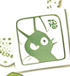
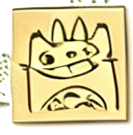
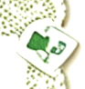
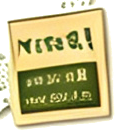
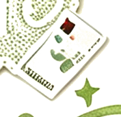

Table of contents
Where to look
01
Experience
Content operations & a Jiangsu Super League season.
Open →
02Case Studies
Roborock & PETLIBRO — research turned into GTM.
Open → 03Content Practice
Weather talk show, Xiaohongshu, Mossy Brew.
Open →
04Creative Archive
Film, editorial, photography & visual play.
Open →

05About
Who I am, what I study, what I care about.
Open →
My approach
Six steps, always the same shape
01
Observe
Watch the field, the platform, the people.
02
Question
What is actually true? What is assumed?
03
Verify
Evidence over opinion — public data first.
04
Convert
Insight into content, content into action.
05
Publish
Ship where the audience already lives.
06
Review
Measure, learn, loop back to observe.
Featured work
Two cases worth a look
Let's connect
Currently exploring content & ops roles across borders.
If you're building something that needs a careful ear and a steady hand with content, I'd love to talk.